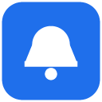
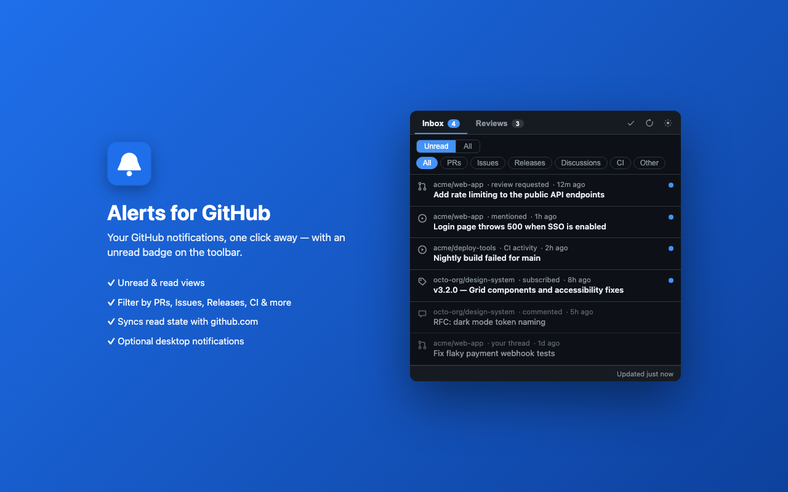
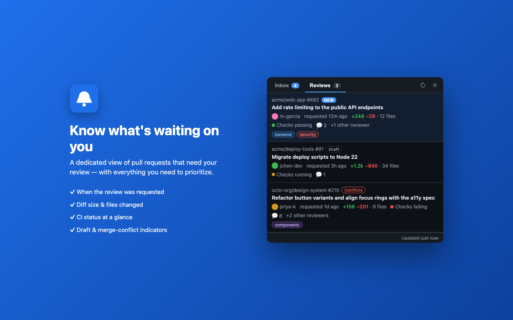
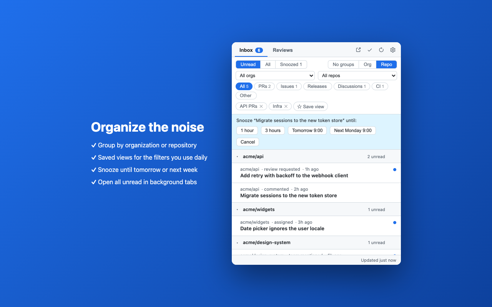
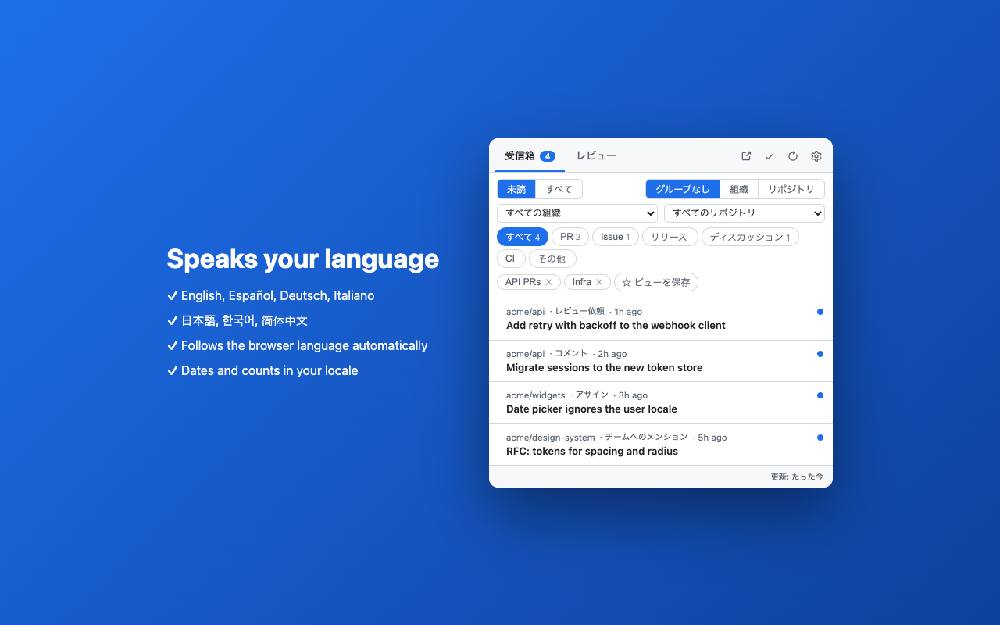

Notifications and pull requests waiting on your review, with an unread badge on the toolbar. Filters, snooze, saved views and focus mode keep it quiet. No servers, no tracking.
Free and open to use. Works with any GitHub.com account via a personal access token.
The popup renders instantly from a local cache and refreshes in the background on your schedule, using conditional requests so unchanged data costs nothing against GitHub's rate limit.
All your notifications, newest first. Unread / All, type chips with live counts, org and repo filters, grouping by org or repo.
Pull requests waiting on you or your team, with when the review was requested, diff size, CI status, conflicts, labels and other reviewers.
Unread count on the toolbar icon, optional desktop notifications, and focus mode that only counts mentions, assignments and review requests.
Hide a thread for an hour, until tomorrow or next week. New activity brings it back early, like github.com.
Name any combination of filters and switch between them with one click. Open every unread thread in background tabs at once.
Arrow keys between rows; GitHub's own shortcuts: E done, Shift+I read, Shift+M unsubscribe, S snooze. Cmd/Ctrl+click keeps the popup open.
Light and dark mode follow your system. The interface follows your browser language.



The extension talks to api.github.com and nothing else. There is no server of ours, so there is nothing to leak.
Install, paste a GitHub personal access token (the settings page walks you through creating one with the right scopes), and pin the icon. Done.
Questions or problems: open an issue. The settings page's Report a problem… button pre-fills one with a token-free diagnostic report.